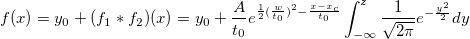
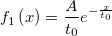
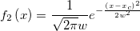
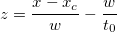

where

and


Exponentially modified Gaussian (EMG) peak function for use in Chromatography.
Number: 5
Names: y0, A, xc, w, t0
Meanings: y0 = offset, A = area, xc = center, w = width, t0 = unknown
Lower Bounds: w > 0.0, t0 > 0.0
Upper Bounds: none
nlf_gaussmod(x,y0,A,xc,w,t0)
FITFUNC\GAUSSMOD.FDF
PFW, Peak Functions, Chromatography, Convolution